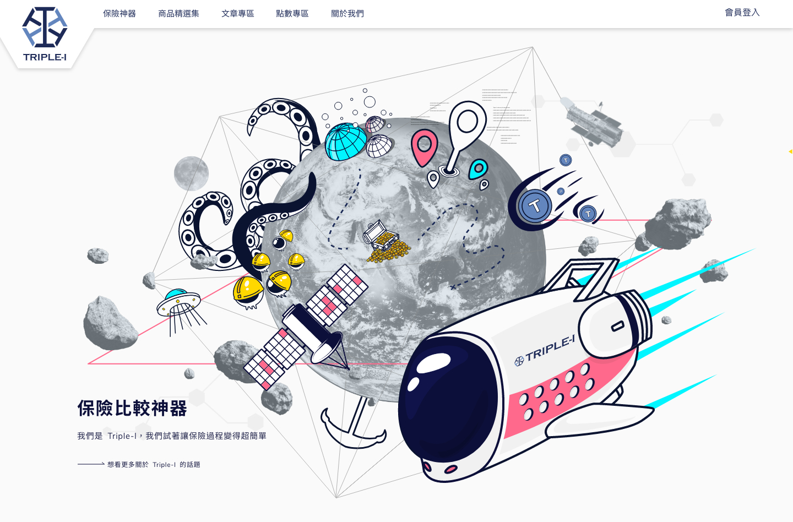
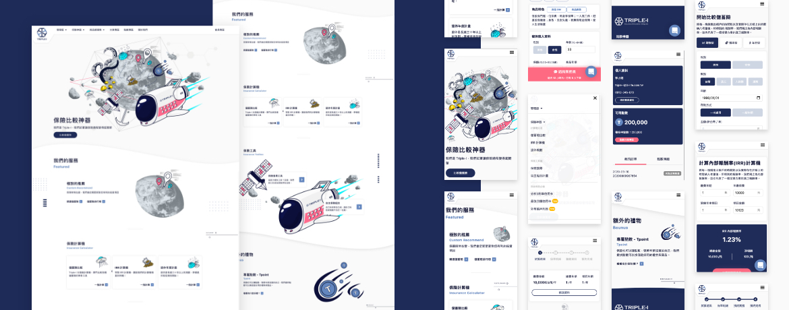
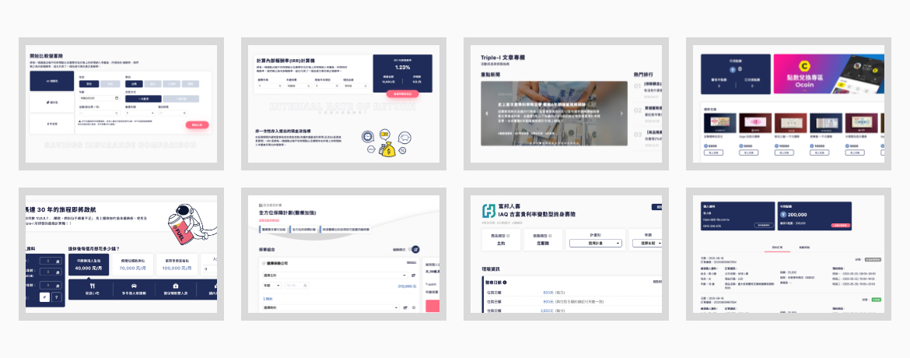
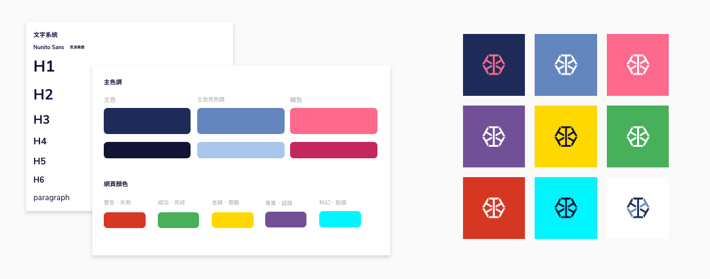
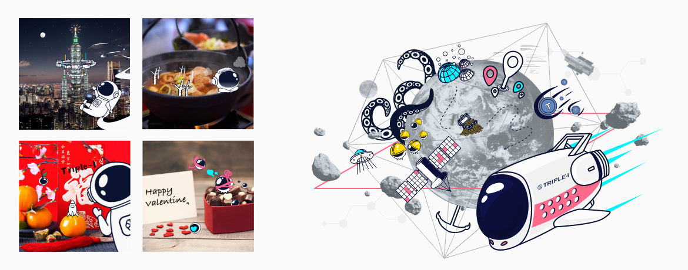
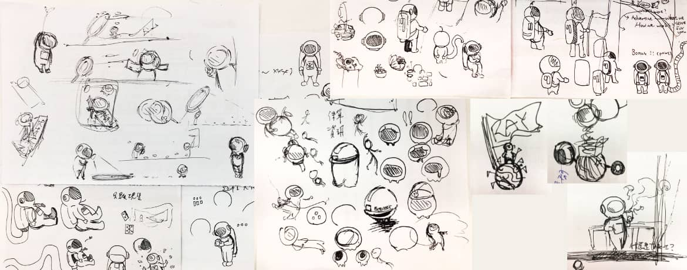
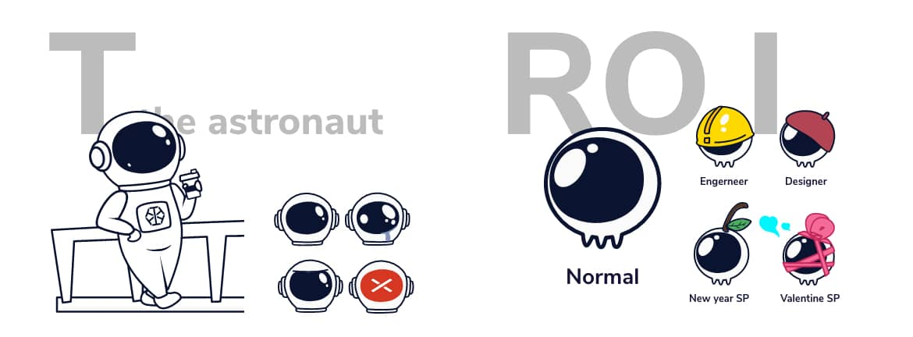

<!DOCTYPE html>
<html lang="en">

<head>
  <meta charset="UTF-8">
  <meta name="viewport" content="width=device-width,maximum-scale=1.0,user-scalable=no, minimal-ui">
  <meta http-equiv="X-UA-Compatible" content="ie=edge">
  <meta name="robots" content="noindex">
  <meta name="googlebot" content="noindex">
  <title>Triple-I | LyT Design</title>
  <link rel="icon" type="image/x-icon" href="img/favicon.ico">
  <link rel="stylesheet" href="https://stackpath.bootstrapcdn.com/bootstrap/4.3.1/css/bootstrap.min.css"
    integrity="sha384-ggOyR0iXCbMQv3Xipma34MD+dH/1fQ784/j6cY/iJTQUOhcWr7x9JvoRxT2MZw1T" crossorigin="anonymous">
  <link rel="stylesheet" href="css/main.css">
  <link rel="stylesheet" href="css/style.css" media="all">
  <link rel="stylesheet" href="css/style_mb.css" media="screen and (max-width: 568px)">
</head>

<body>
  <div class="wrapper">
    <header>
      <div id="back" class="edge"><a href="index.html">←Home</a></div>
      <div id="licence" class="edge">© LyT design</div>
    </header>
    <div class="top">
      <div class="top_sub">
        Product design
      </div>
      <div class="top_words">
        Triple-I
      </div>
      <div class="top_link">
        <a href="https://3i-life.com.tw/" target="_blank">LINK</a>
      </div>
    </div>
    <div class="contents">
      <div class="project_introduce">
        <div class="introduce_block">
          <div class="i_item">
            <p class="i_text">Triple-I 是一個保險資訊網站，從製作儲蓄險比較工具起家，在我任職的期間從專門做儲蓄險的業務慢慢拓展到一般保險內容，並製作各種有利於客戶與業務進行保險溝通的功能開發。</p>
          </div>
          <div class="i_item role">
            <p>Visual design <br>UX design <br>Web UI design <br>Development </p>
          </div>
        </div>
      </div>
      <div class="project_part">
        <div class="p_title">
          <h4>Website</h4>
        </div>
        <div class="p_block">
          <p class="p_content">進行的是該網站的外觀重新拉皮製作，並且考量後續新工具的規劃還有視覺重新定位，除了現有的網站架構與太空主題不變之外，其餘部分都是重新製作。</p>
          <div class="p_img">
            
          </div>
          <div class="p_img">
            
          </div>
          <div class="p_img">
            
          </div>
        </div>
        
        <div class="p_paregragh">
          <p class="p_content">為了能夠讓該專案能夠發展穩定，深入了解公司文化與需求分析之後，開始定調主要色調、主視覺模式、網頁guidline、文宣品、文案撰寫、社群經營規範以及吉祥物製作。</p>
        </div>

        <div class="p_title">
          <h4>System</h4>
        </div>
        <div class="p_block">
          <div class="p_img">
            
          </div>
        </div>

        <div class="p_title">
          <h4>Key visaul</h4>
        </div>
        <div class="p_block">
          <div class="p_img">
            
          </div>
        </div>

        <div class="p_title">
          <h4>吉祥物</h4>
        </div>
        <div class="p_block">
          <p class="p_content">吉祥物 -- 小T，進行客服相關的工作，屬於領航員的概念，製作過程中多半以客製畫的方式進行各種動作設計。</p>
          <p class="p_content">吉祥物 -- RO.I，生長在外太空的三隻腳小生物，每一隻有獨特的編號(例如:RO.I-234)，現在在 Triple-I 進行各種相關工作，看他們的帽子跟裝飾就會知道他們是屬於哪個部門的RO.I。</p>
          <p class="p_content">小T 的存在在一開始就有了，只是將他簡化樣式以利後續開發方便。RO.I 則是後來為了各種服務與視覺需求而製作的小型吉祥物。</p>
          <div class="p_img">
            
          </div>
          <div class="p_img">
            
          </div>
        </div>

        <!-- <div class="p_title">
          <h4>Key visaul</h4>
        </div>
        <div class="p_paregragh_img">
          <div class="p_img">
            
          </div>
        </div> -->
        

      </div>


    </div>
  </div>
  <script src="https://code.jquery.com/jquery-3.4.1.js" integrity="sha256-WpOohJOqMqqyKL9FccASB9O0KwACQJpFTUBLTYOVvVU="
    crossorigin="anonymous"></script>
  <script type="text/javascript" src="js/homepage.js"></script>
  <script type="text/javascript"></script>


</body>

</html>